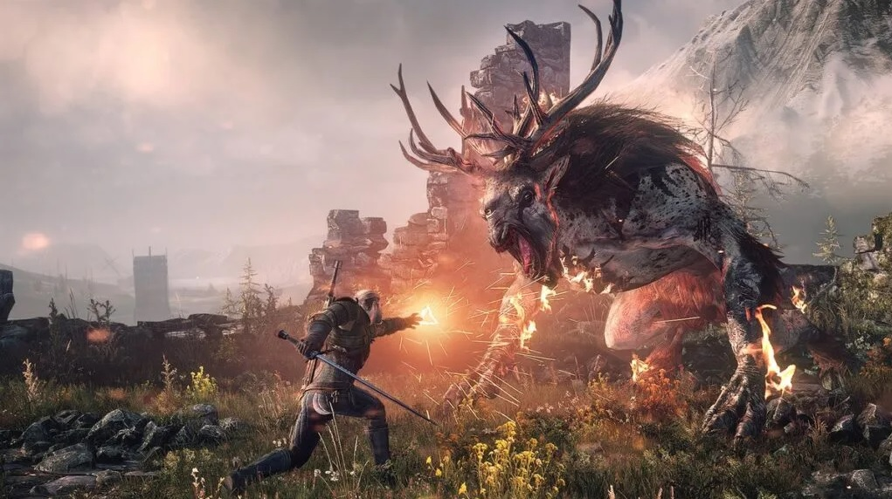
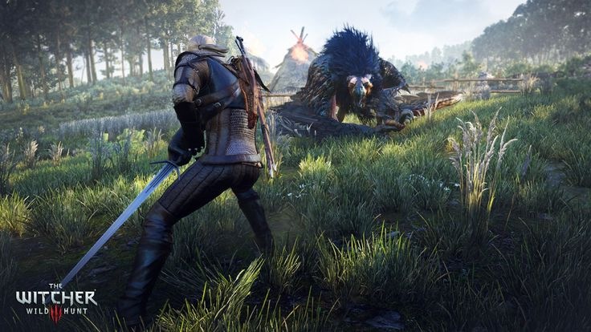
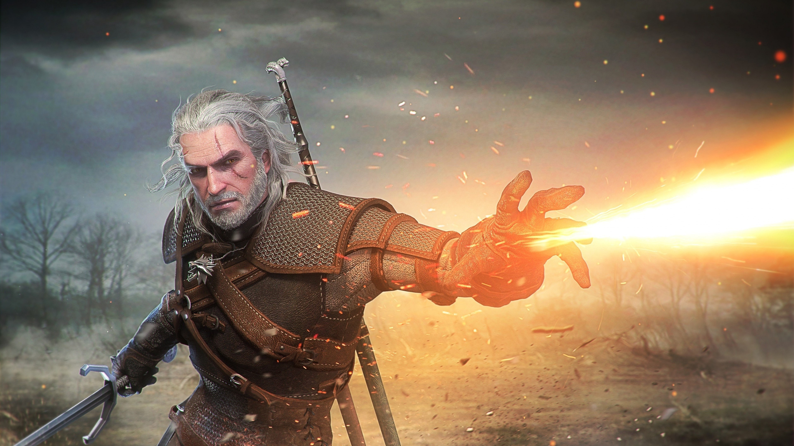
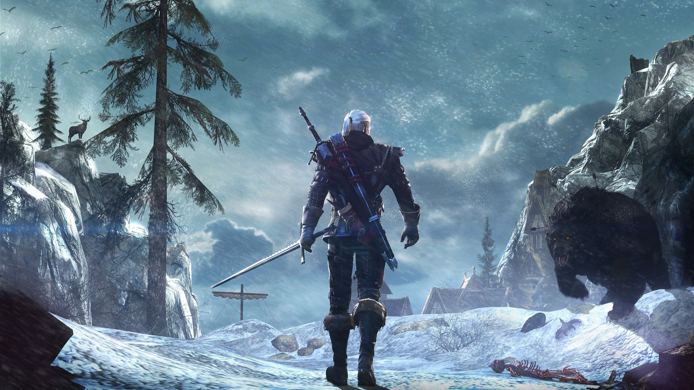
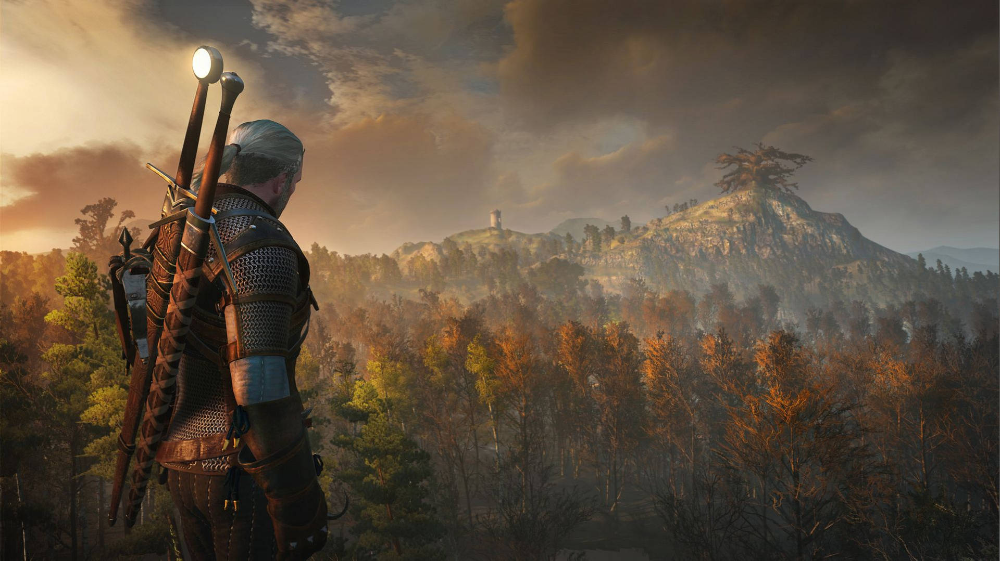
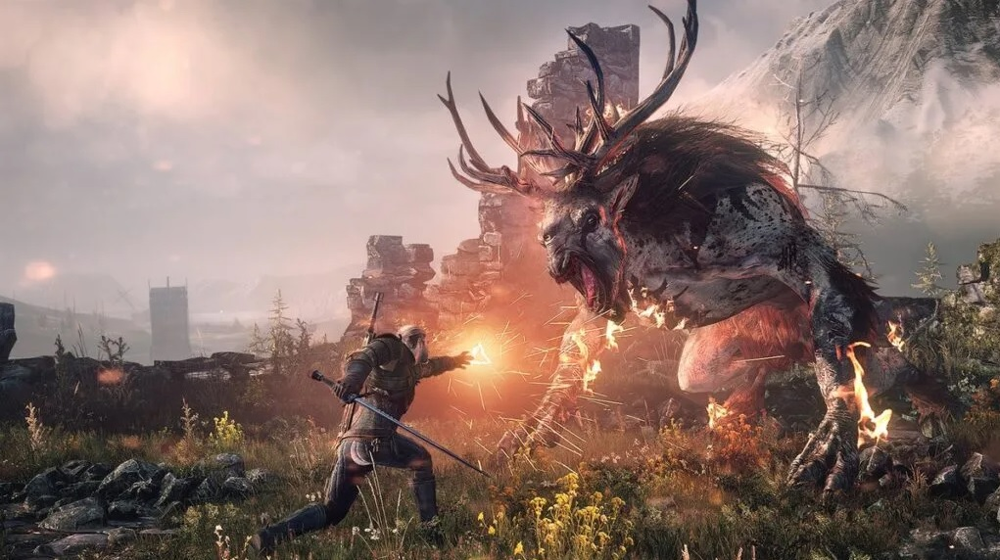
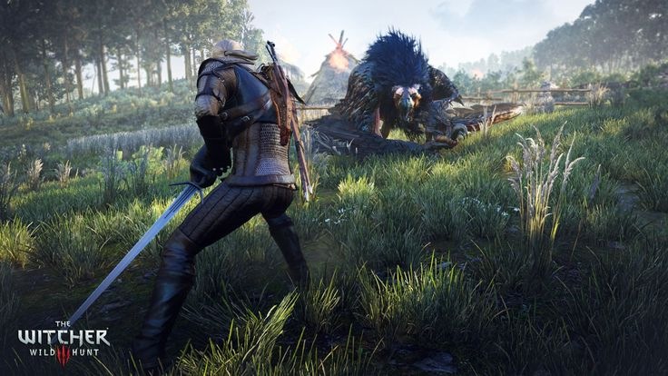
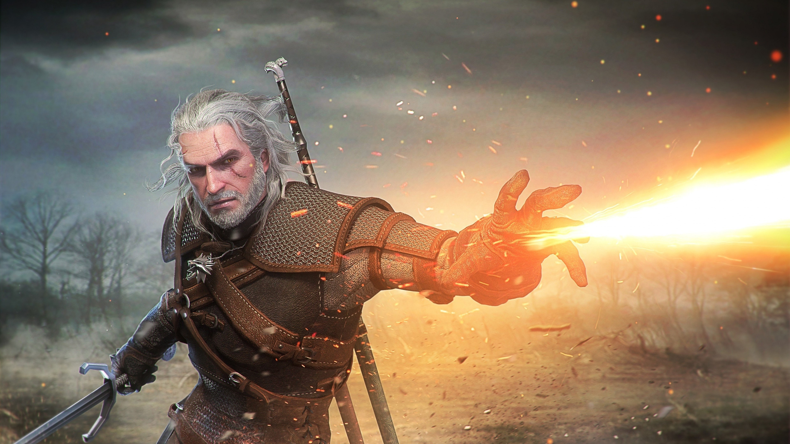
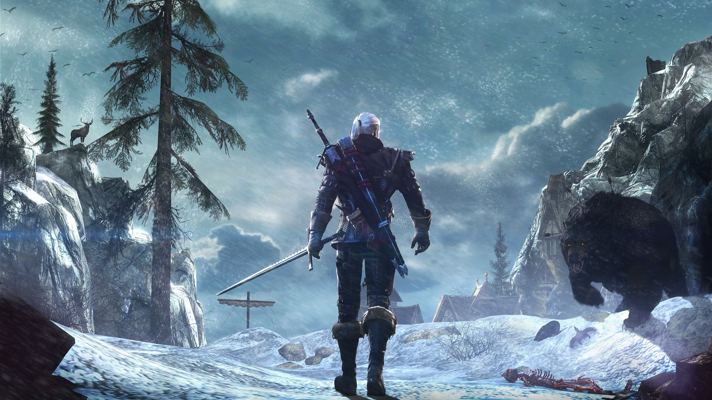
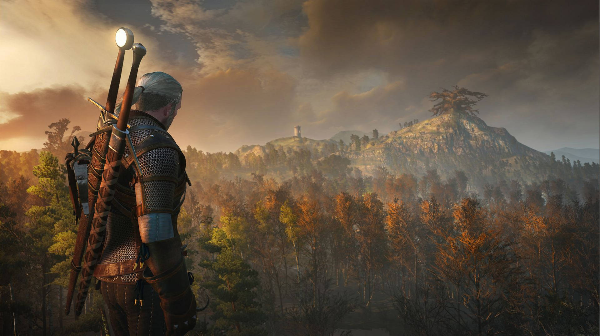

Sobre o Jogo
O lendário bruxo Geralt de Rívia inicia uma longa jornada pelos Reinos do Norte. Enquanto depara-se com um misterioso e macabro exército de cavaleiros vermelhos conhecidos como a "Caçada Selvagem", que por onde passam deixam somente sangue e ruína.
Novidades
Enfrente-os usando espadas e magia, à medida que interage com outros personagens e completa missões para o progresso da história, cada escolha ou atitude que o jogador toma afeta o mundo do game.
 









Um gigantesco cenário medieval que dá liberdade total ao jogador, podendo viajar a pé, a barco, ou montado em Carpeado, o cavalo inseparável de Geralt.
Prêmios
Foi galardoado com o grande prêmio de Jogo do Ano em 3 de dezembro de 2015 pela The Game Awards, a
mais importante e prestigiada no ramo dos videogames.
The Witcher 3: Wild Hunt é um dos jogos mais premiados da história, com 257 prêmios de múltiplas
publicações e eventos recebidos apenas na categoria de melhor jogo.
Também foi um sucesso financeiro, tendo vendido cerca de 28 milhões de cópias ao redor do mundo,
tornando-se um dos jogos mais vendidos de todos os tempos.